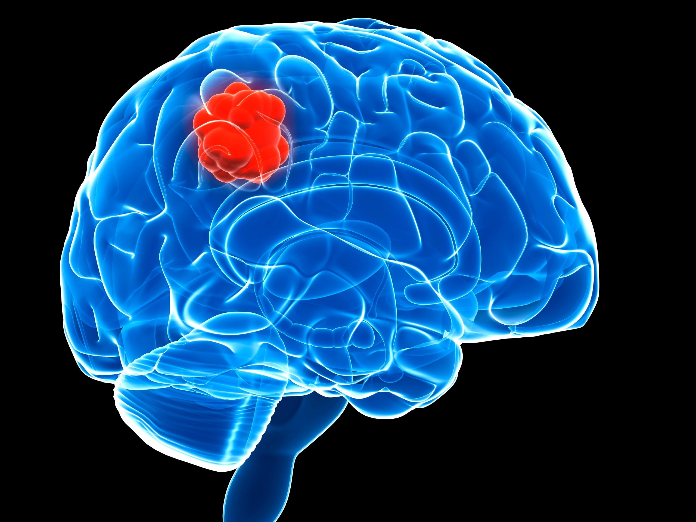

He must have had a brain tumor. That would explain his sweating and delirium. *look into the lump in his brain*
<<<<<<< HEAD

=======
>>>>>>> 7d8237517bfd6280befab29e0c90fd632ac4d4eb
First, there would be headaches, then they would have difficulty eating, swallowing, and coughing. Fatigue and mood swings are extremely common. It will get harder and harder to move around. Breathing will also get worse. They will start to lose consciousness, then it will happen more and more. The week before death, one out of three people will experience seizures. Then they will die.
One of the strongest aspects of this theory would be how well it explains his state of mind when he was picked up. People suffering from brain lesions would have confusion, memory loss, and delirium. Poe showed all of these symptoms when he was picked up.
The coma he went into after getting picked up were also one of the effects of a brain lesion.
The symptoms of brain lesions are very loose, it is hard to diagnose and is especially difficult when you can’t run tests.